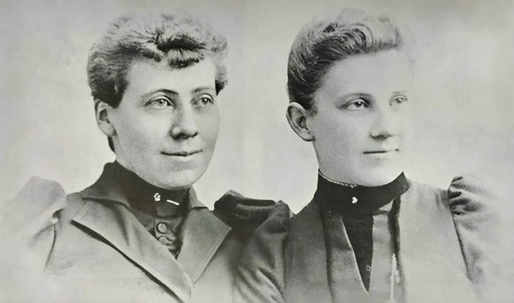
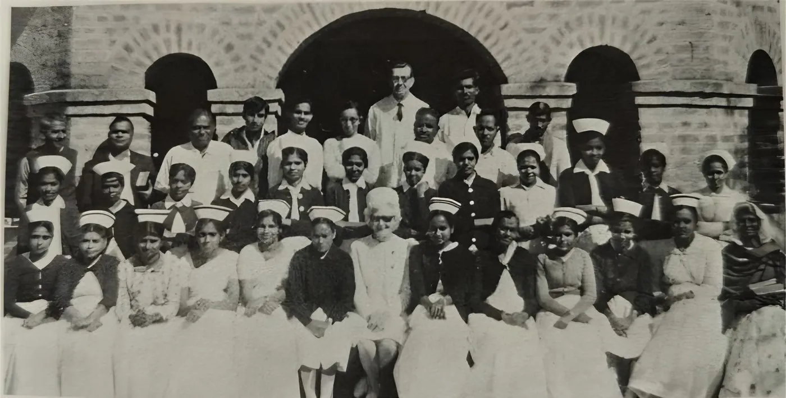
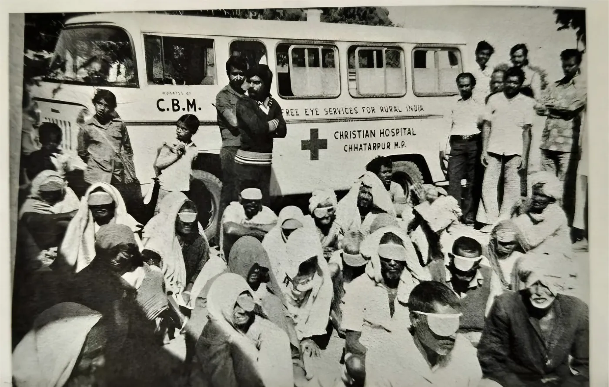
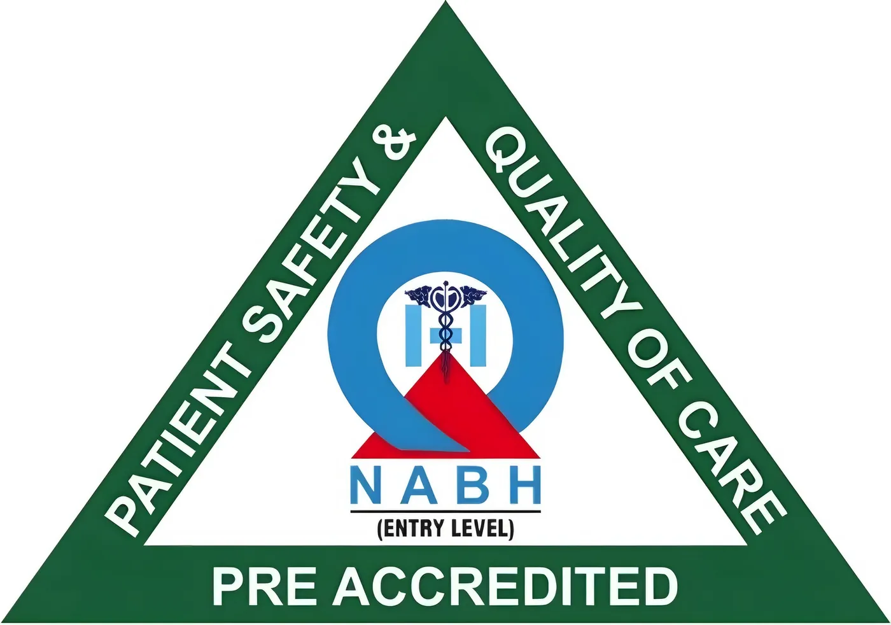

Healing communities, transforming lives
For over nine decades, we’ve been bringing quality healthcare to those who need it most, one community at a time.
We are a nonprofit healthcare organization dedicated to ensuring that quality medical care is accessible to everyone, regardless of their economic circumstances.
Christian Hospital Chhatarpur was founded in 1930 by missionaries of the Friends Foreign Missionary Society to serve the women and children of the Bundelkhand region. Today it is a 100 bed hospital and a unit of Emmanuel Hospital Association, New Delhi.
Our team of compassionate healthcare professionals works tirelessly in underserved communities, providing essential services with dignity and respect. Founded on the belief that healthcare is a fundamental human right, we combine clinical excellence with community empowerment, creating sustainable health solutions that last beyond our visits.
A world where every individual has access to compassionate, quality healthcare, and where communities are empowered to take control of their health and wellbeing.
To deliver comprehensive healthcare services to underserved populations, build local capacity through education and training, and advocate for systemic changes that promote health equity for all.
The principles that guide our work

Our story began in a small rural clinic, where a group of dedicated healthcare workers witnessed firsthand the devastating impact of inadequate medical access. What started as a weekend volunteer initiative has grown into a comprehensive healthcare network serving thousands of families across multiple regions.
“Every person deserves to live a healthy life. Our legacy is ensuring that access to quality healthcare is never determined by where you were born or how much money you have.”
Our journey since 1925




NABH Entry LevelPre-accredited for patient safety and quality of care.Join us in our mission
Whether through volunteering, donating, or partnering with us, you can be part of the solution. Together, we can create healthier communities and brighter futures.